Martine Franck was a key member of Magnum Photos, a photographer known for a quiet, warm, and measured style. Her work does not chase dramatic moments. With soft light, restrained composition, and deep feeling, she gazes at the groups and corners that are often overlooked, and she shows a visual ethics that is almost poetic. Franck's lens is always turned toward the other, the nun, the homeless, the aging artist. With an equal and respectful eye, she catches the quiet and dignity in their lives. Deeply influenced by Eastern aesthetics, she often uses empty space and diffuse light, and her soft tones carry a calm, melancholic mood. Though she lived and worked with Bresson, she kept an independent artistic voice. Her decisive moment values inner resonance over the perfection of outward form. She used film cameras her whole life and believed in the meaning of waiting and process. Franck's images are not only a visual record. They are a way of caring, and in silence they carry a deep and steady belief in human nature.
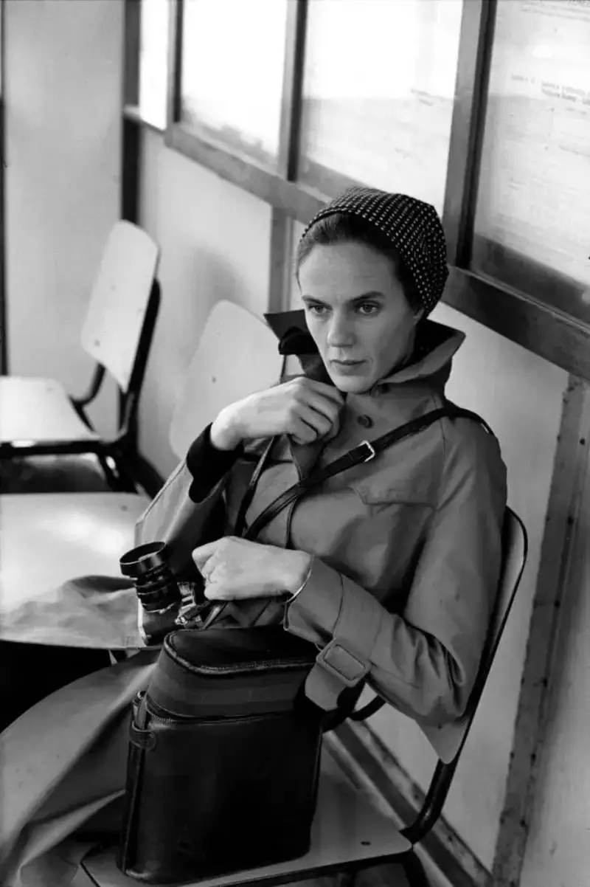
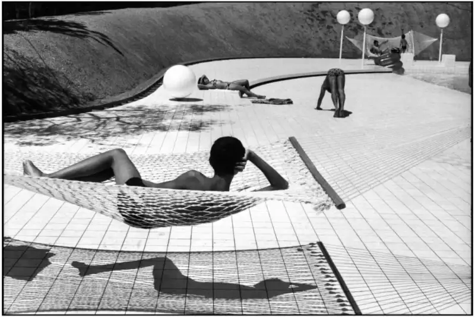
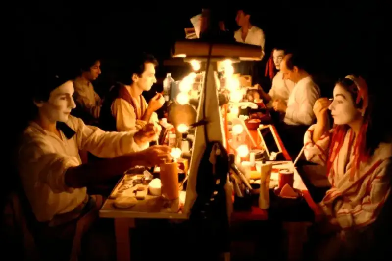
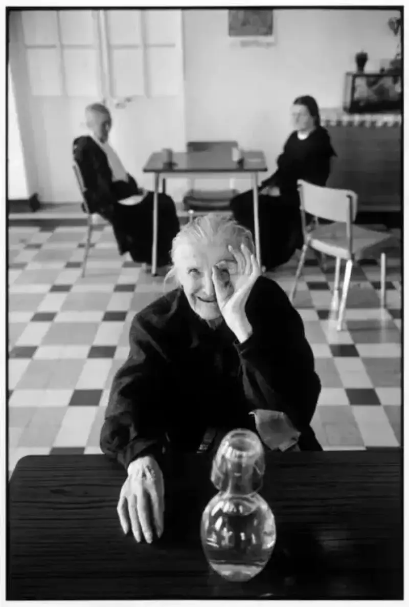
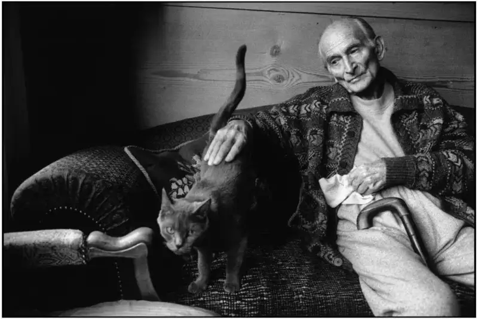
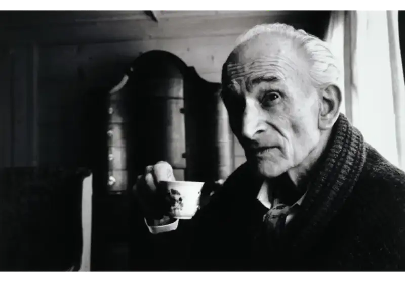
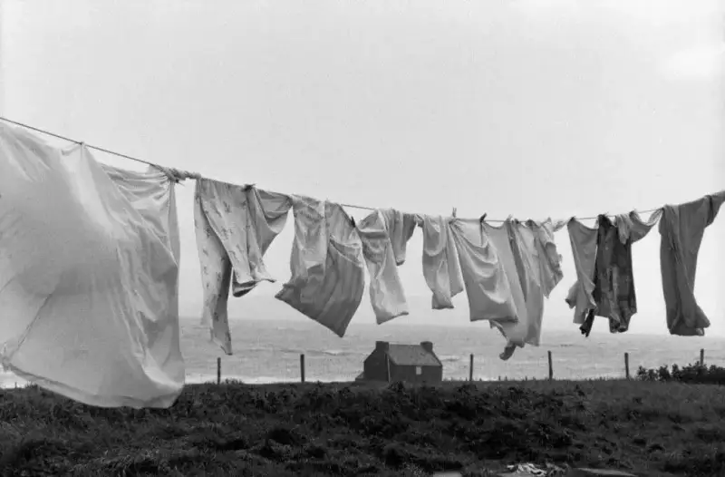
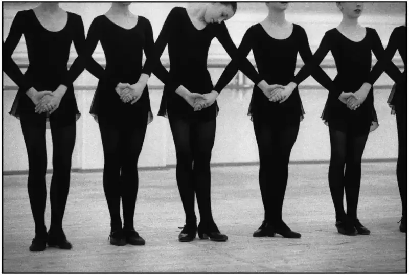
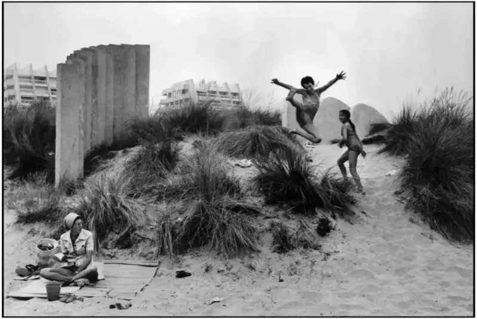
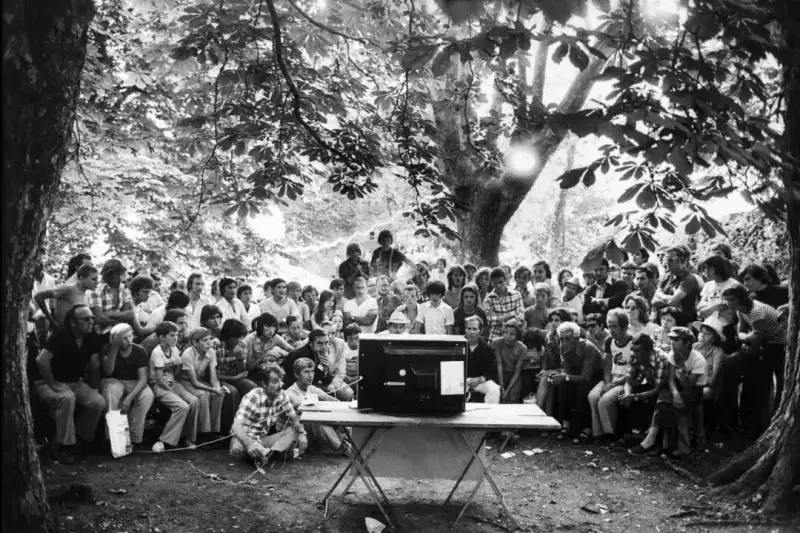
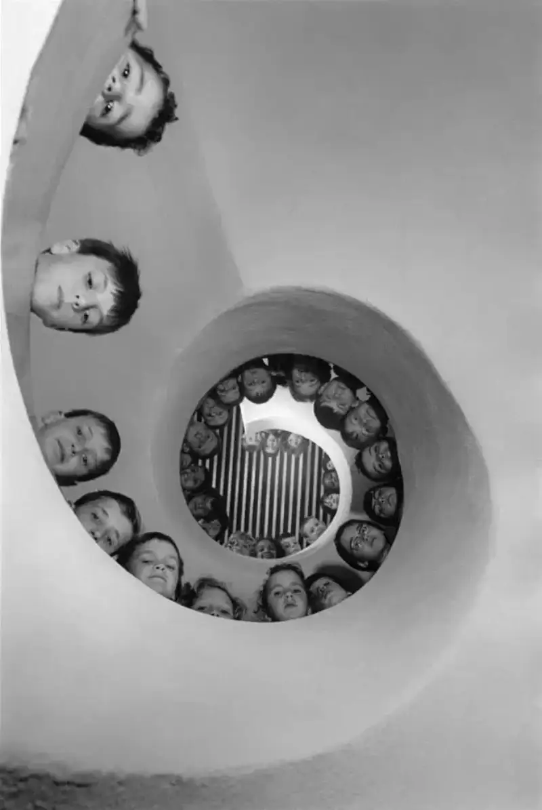
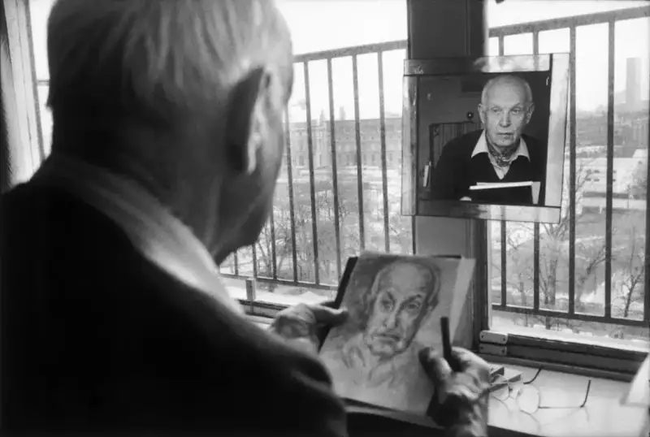
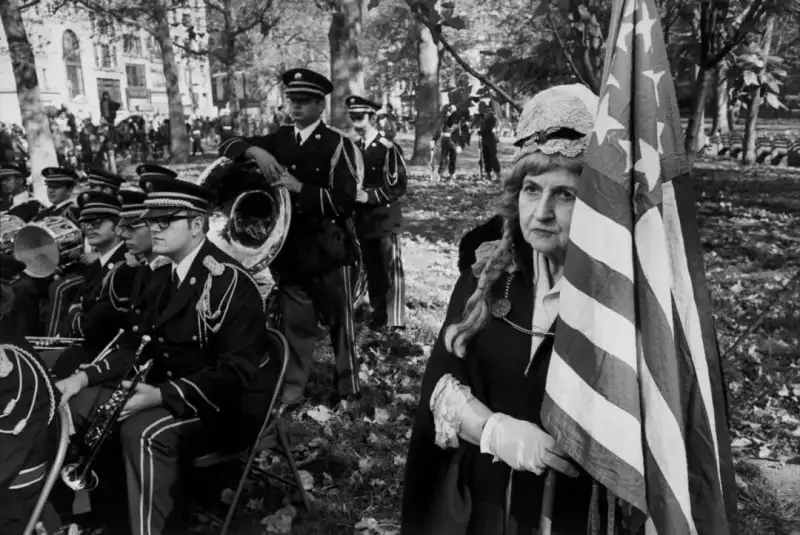
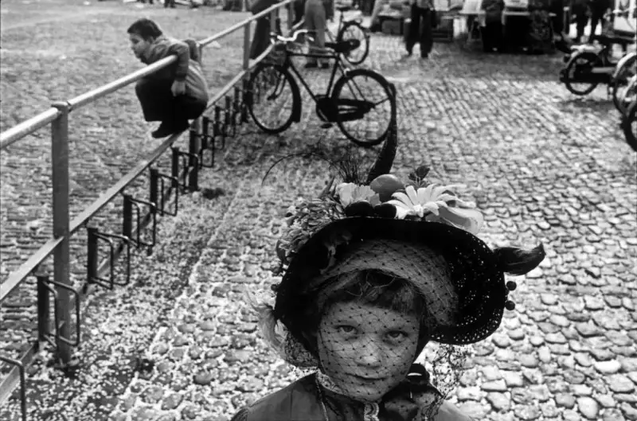
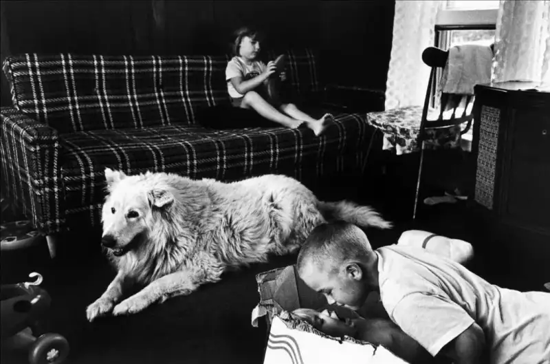
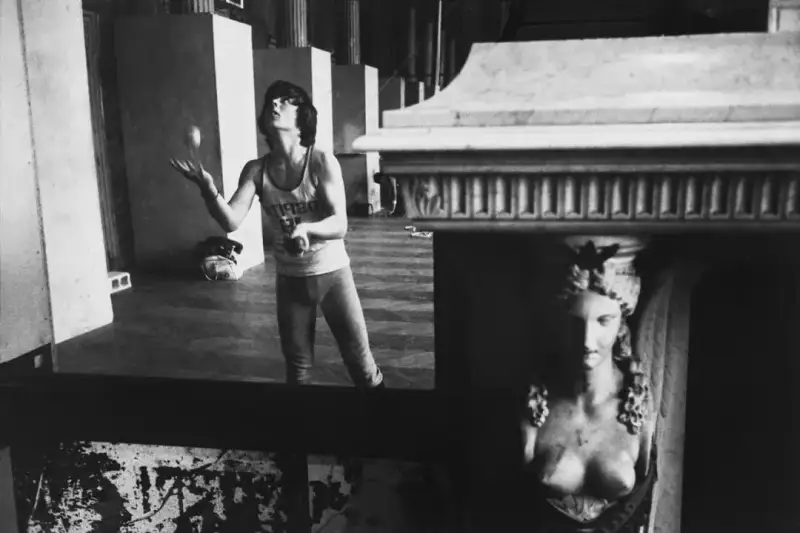